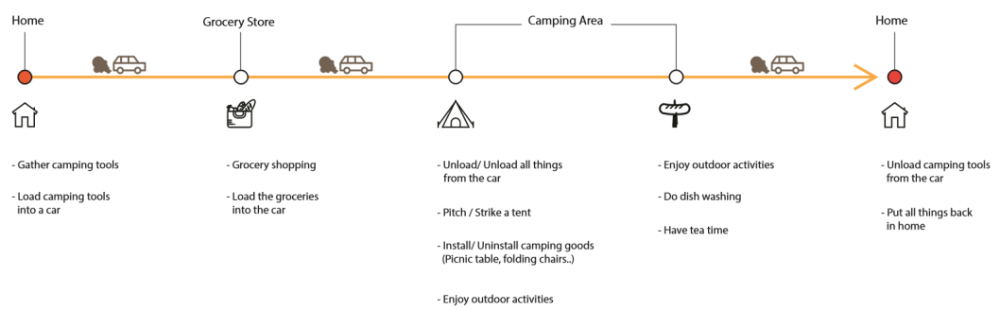
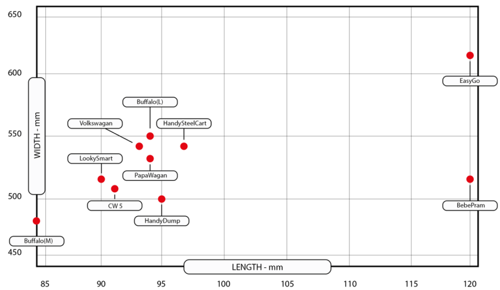
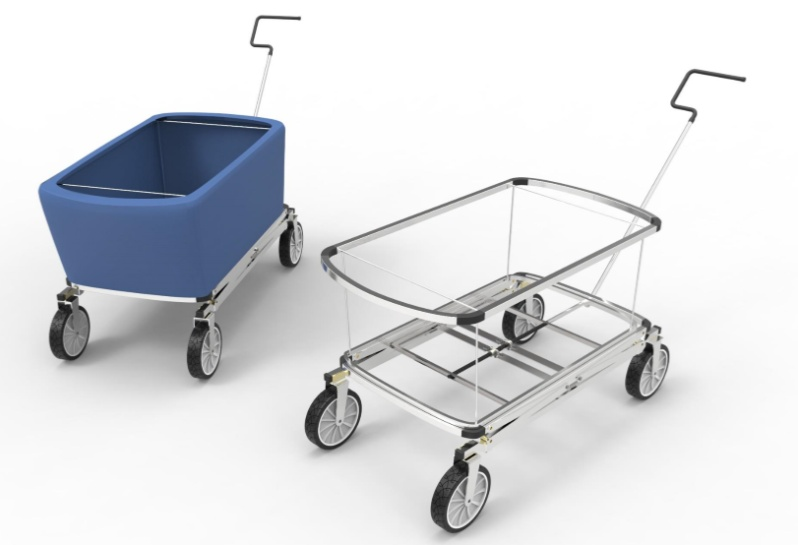
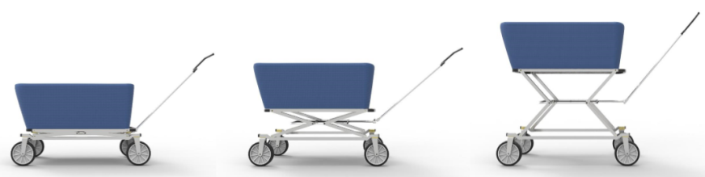
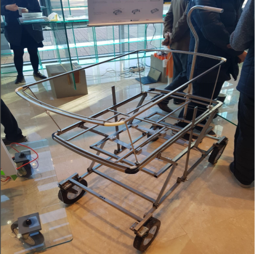

EasyCamping: Adjustable camping cart
For fuel efficiency and long-distance driving, it is important to reduce vehicle weight. This pushes car manufacturers to replace extra weighted components, such as spare tires and jacks, with light and disposable ones. However, this trend is a crisis for companies manufacturing extra components for cars. It is crucial for car manufacturing companies to find new business opportunities based on their existing technologies. This paper shows how design can contribute to new business development for a company facing such a crisis. To this end, we developed a new item for a jack manufacturer, focusing on applying the manufacturer’s proprietary technology. In the design research stage, we analyzed social trends and the strengths, weaknesses, opportunities and threats of the manufacturer and its technologies. As such, we designed a deformable camping cart using the jack’s mechanism to minimize the obstacles and discomfort that campers faced during use of the camping cart. Our study suggests that design offers the capability to produce new products and the potential to create new markets for B2B suppliers with their own production technology. In addition, there is a higher possibility of design concept realization when a design project starts with existing technology than when it relies mainly on market and user research. We hope this study provides insights into new product development through a design process for B2B suppliers.
To identify a design opportunity in camping, we needed to understand campers’ be-haviors and problems. First, we analyzed camping activities through related literature. Then, we experienced camping activities ourselves. Based on this, we generated a camping journey map to understand actual design problems in camping activities. This gave us insightful information about design problems related to camping. In all of the camping activities, we found that a camping cart was an essential piece of equipment that helped campers carry various goods in many situations. In the preparation stage of camping, campers used it to carry foods and camping items at the grocery store. At the camping site, campers used a camping cart to move various items here and there. Based on our analysis, we found characteristics of existing camping carts. Most existing camping carts have a low center of mass to prevent them from tipping over when being pulled over rough surfaces. Because of this, the height is low. This low height causes users to assume an inconvenient posture, lowering their waists each time goods are loaded into or unloaded from the cart. This results in an undesirable experience for users and is one of the reasons users consider camping to be a cumbersome event.
In addition, in some extreme cases, use of a camping cart can cause fatigue and contribute to the development of pain and disorders in the lower back, such as musculoskeletal disorders . This was a good and proper design problem to tackle for the company considering the market and the company’s competence. Therefore, we decided to design a camping cart with an adjustable height using the mechanism of the automobile jack. The aim of the design was to minimize the inconvenient posture during the use of the cart.
|  |
Based on our analysis of campers’ behaviors and competing products, we formulated a design requirement before designing the cart, as follows. 1. It should not be heavier than the existing camping carts in the market (maximum of 20 kg). 2. It should be able to carry as much weight as or more than existing camping carts do (100 kg or heavier). 3. The height should be adjustable to prevent inconvenience to users while loading and unloading camping items. 4. It should be completely foldable to easily set in the car. 5. It should be able to be produced using the technology held by SAMKI. Based on the design requirements, we began to design the camping cart. First, the size of the camping cart was determined through analyzing different types of camping carts available in the market. Considering the need for users to carry many items at once, a bigger one is better than a smaller one. However, applying the fourth design requirement, the maximum size is constrained by the size of the car trunk. In the following Figure, the carts that are smaller than 100 kg on the left are the ones that can fit into sedans.
|  |
Based on the determination of the size, we determined the detailed structure and shape by using a CAD program (See figures below). All components of the camping cart were designed to be produced using the company’s production technology so that there would be no need to invest in additional manufacturing facilities.
|  |
To fulfill requirement 3, we designed a manual adjustable height mechanism. Users can control the height by turning the knob of the cart (See Figure below). The cart structure should be simplified to lower the manufacturing cost as well as maintain a light weight. In addition, the basket was designed to be completely foldable. This is advantageous for campers when taking goods out because they do not need to lift the items from the basket.
|  |
After defining each part’s geometric details, we developed prototypes for the next verification stage (See Figure below).
|  |
The prototype we manufactured has special functions aside from the common features of existing camping carts. These are the height adjustment function and folding function of the basket. Due to the characteristics of such a design, inconvenience and negative experience for users are reduced, and bodily damage due to inconvenient posture in loading and unloading goods is prevented. In addition, the cart can be manufactured using SAMKI’s production facility.
In the final stage, eight external experts assessed the prototype. Two of them were from SAMKI. They commented that the prototype has the potential to pioneer a new market. This could reduce the risk of business expansion because the camping cart can be produced within the current manufacturing facility and using existing know-how. SAMKI managers expressed significant interest in the fact that design had a role in the identification of a new business opportunity based on the company’s existing production technology and know-how. The prototype was presented and demonstrated in the executive meeting of the company. After that, the company reviewed business feasibility.
As we carried out this project, we considered answers to the two inquiries that we had in the early stage of the project.
Q1. In order to identify a new business opportunity for the automobile jack manufacturing company that belongs to a declining industry, how should the design process be applied?
We think it is important to understand the current status of the company first and find out the strengths and weaknesses of the company. Through interviews with man-agers and employees, we understood the situation and potential of the company. We also determined business strategies based on a SWOT analysis. The “seeds-needs matrix” method provided us with specific design opportunities. We can conclude that appropriate design methods should be used at first to understand a company’s status, production facility and technologies.
Q2. Through the new business opportunity, what would the influence of a product be on the company?
The external experts and the company managers agreed that the product has the potential to open a new market. They commented that demonstrating the working prototype helped them better understand the design concept and technology feasibility.
This project is currently in progress. The company is reviewing further development of the product. Some incomplete designs should be revised. The designs had hardly been completed before testing the working prototype. In addition, the user evaluation was not included in the current phase of the project. For further study, a usability test should be conducted. Furthermore, ergonomic analysis is needed to test the influence of the adjustable height function on actual usage.
This design activity was supported by the Ministry of Education and National Research Foundation of the Republic of Korea (NRF-2015S1A5A8010614). The work is also supported by the Promotion of Special Design-Technology Convergence Graduate School of Korea Institute of Design Promotion with a grant from the Ministry of Trade, Industry & Energy of the Republic of Korea (N0001436).